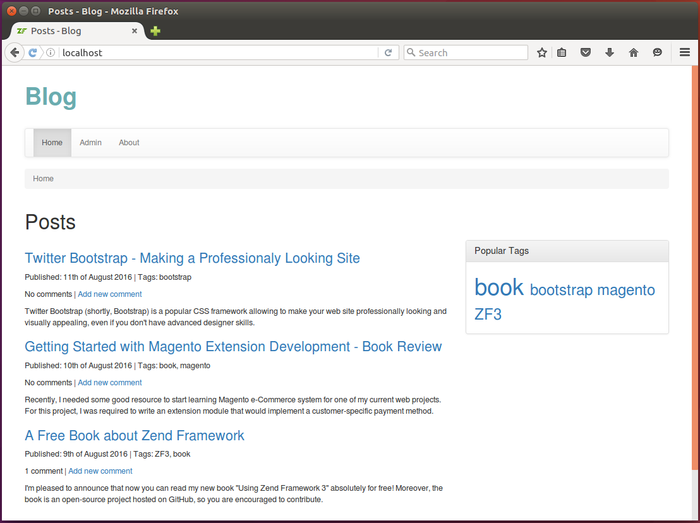

12.14. Реализация облака тегов
Еще одна часть примера Blog, которую мы реализуем в этом разделе, будет облако тегов. Оно будет находиться на странице Home. Облако содержит самые популярные теги, а размер их шрифта зависит от частоты употребления тега: более популярные будут большего размера. Нажатие на тег в облаке приведет к фильтрации постов по этому тегу.
Пример того, чего мы хотим достичь, можно увидеть ниже, в правой части рисунка 12.11:
 Рисунок 12.11. Облако тегов
Чтобы добавить облако, нам нужно:
- создать пользовательский класс репозитория сущностей
PostRepository, который будет инкапсулировать сложный алгоритм фильтрации постов по тегу; - изменить
PostManagerи добавить функциональность для вычисления размеров шрифтов; - добавить действие контроллера и соответствующий шаблон представления.
12.14.1. Добавление пользовательского репозитория постов
Ранее мы упоминали, что по умолчанию Doctrine использует в качестве репозитория класс
Doctrine\ORM\EntityRepository. Пользовательский репозиторий - это класс, расширяющий
EntityRepository. Как правило, он используется, когда необходимо инкапсулировать сложные
DQL-запросы и алгоритмы поиска в один компонент кода.
DQL-запросы также можно поместить в класс контроллера, но это сделает контроллер слишком "толстым". Так как мы используем шаблон проектирования MVC, мы стараемся этого избежать.
DQL похож на SQL в том плане, что он позволяет составлять и выполнять запросы к базе данных, однако результатом запроса является не массив строк таблицы, а массив объектов. Дополнительную информацию о DQL, а также примеры его использования, можно посмотреть на этой странице.
Для веб-приложения Blog нам понадобится пользовательский репозиторий, который позволит
находить опубликованные посты, имеющие хотя бы один тег (чтобы посчитать общее количество
постов, содержащих теги), и находить опубликованные посты, отфильтрованные по определенному
тегу. Мы планируем инкапсулировать этот алгоритм поиска в наш репозиторий PostRepository.
Doctrine работает с пользовательскими репозиториями прозрачно. Это значит, что вы извлекаете репозиторий из
EntityManagerкак обычно и точно так же можете использовать его методыfindBy(),findOneBy()и другие.
Создайте файл PostRepository.php в каталоге Repository под корневым каталогом модуля. Ниже
представлен код класса PostRepository, который содержит два public-метода:
- метод
findPostsHavingAnyTag(), предназначенный для выбора всех постов, который имеют статус Published, а также один или несколько тегов, связанных с ними; - и метод
findPostsByTag(), возвращающий все опубликованные посты, которые имеют определенный тег (то есть, фильтрующий посты по заданному тегу).
<?php
namespace Application\Repository;
use Doctrine\ORM\EntityRepository;
use Application\Entity\Post;
// Это пользовательский класс репозитория для сущности Post.
class PostRepository extends EntityRepository
{
// Находит все опубликованные посты, имеющие хотя бы один тег.
public function findPostsHavingAnyTag()
{
$entityManager = $this->getEntityManager();
$queryBuilder = $entityManager->createQueryBuilder();
$queryBuilder->select('p')
->from(Post::class, 'p')
->join('p.tags', 't')
->where('p.status = ?1')
->orderBy('p.dateCreated', 'DESC')
->setParameter('1', Post::STATUS_PUBLISHED);
$posts = $queryBuilder->getQuery()->getResult();
return $posts;
}
// Находит все опубликованные посты, содержащие заданный тег.
public function findPostsByTag($tagName)
{
$entityManager = $this->getEntityManager();
$queryBuilder = $entityManager->createQueryBuilder();
$queryBuilder->select('p')
->from(Post::class, 'p')
->join('p.tags', 't')
->where('p.status = ?1')
->andWhere('t.name = ?2')
->orderBy('p.dateCreated', 'DESC')
->setParameter('1', Post::STATUS_PUBLISHED)
->setParameter('2', $tagName);
$posts = $queryBuilder->getQuery()->getResult();
return $posts;
}
}
В этом фрагменты мы используем построитель запросов (query builder) для удобного создания сложных DQL-запросов.
В строках 17-22 мы создаем запрос, который выбирает все опубликованные посты, упорядочивая их по дате создания в порядке убывания. Мы выбираем только те посты, которые имеют хотя бы один тег. В строке 24 мы выполняем запрос. Если вам интересно, какой DQL-код генерирует построитель запросов, вот он:
SELECT p FROM \Application\Entity\Post p JOIN p.tags t
WHERE p.status=?1 ORDER BY p.dateCreated DESC
В строках 36-43 мы создаем запрос, который фильтрует посты по имени тега. Аналогичный DQL представлен ниже:
SELECT p FROM \Application\Entity\Post p JOIN p.tags t
WHERE p.status=?1 AND t.name=?2 ORDER BY p.dateCreated DESC
Чтобы узнать больше о построителе запросов Doctrine, пожалуйста, обратитесь к этой странице.
Чтобы сообщить Doctrine, что для сущности Post нужно использовать пользовательский
репозиторий, измените аннотацию сущности Post следующим образом:
<?php
//...
/**
* Этот класс представляет собой пост в блоге.
* @ORM\Entity(repositoryClass="\Application\Repository\PostRepository")
* @ORM\Table(name="post")
*/
class Post
{
//...
}
Во фрагменте выше мы используем параметр repositoryClass тега @ORM\Entity, чтобы сообщить Doctrine,
что нужно использовать репозиторий PostRepository.
12.14.2. Вычисление облака тегов
Бизнес-логика для нашего облака тегов будет храниться внутри метода PostManager::getTagCloud(), как показано
ниже:
<?php
//...
class PostManager
{
//...
// Вычисляет частоту использования тегов.
public function getTagCloud()
{
$tagCloud = [];
$posts = $this->entityManager->getRepository(Post::class)
->findPostsHavingAnyTag();
$totalPostCount = count($posts);
$tags = $this->entityManager->getRepository(Tag::class)
->findAll();
foreach ($tags as $tag) {
$postsByTag = $this->entityManager->getRepository(Post::class)
->findPostsByTag($tag->getName());
$postCount = count($postsByTag);
if ($postCount > 0) {
$tagCloud[$tag->getName()] = $postCount;
}
}
$normalizedTagCloud = [];
// Нормализуем значение
foreach ($tagCloud as $name=>$postCount) {
$normalizedTagCloud[$name] = $postCount/$totalPostCount;
}
return $normalizedTagCloud;
}
}
Этот фрагмент содержит метод getTagCloud(), который выбирает все посты, имеющие хотя бы
один связанный тег и вычисляет "частоту" каждого тега (насколько часто он встречается).
затем данный метод нормализует значения частоты (представляет их в виде числа от 0 до 1.0)
12.14.3. Изменение действия контроллера
В этом разделе мы изменим IndexController с целью реализовать фильтр тегов.
<?php
//...
class IndexController extends AbstractActionController
{
/**
* Менеджер постов.
* @var Application\Service\PostManager
*/
private $postManager;
// Конструктор используется для внедрения зависимостей в контроллер.
public function __construct($entityManager, $postManager)
{
$this->entityManager = $entityManager;
$this->postManager = $postManager;
}
public function indexAction()
{
$tagFilter = $this->params()->fromQuery('tag', null);
if ($tagFilter) {
// Фильтруем посты по тегу.
$posts = $this->entityManager->getRepository(Post::class)
->findPostsByTag($tagFilter);
} else {
// Получаем недавние посты
$posts = $this->entityManager->getRepository(Post::class)
->findBy(['status'=>Post::STATUS_PUBLISHED],
['dateCreated'=>'DESC']);
}
// Получаем популярные теги.
$tagCloud = $this->postManager->getTagCloud();
// Визуализируем шаблон представления.
return new ViewModel([
'posts' => $posts,
'postManager' => $this->postManager,
'tagCloud' => $tagCloud
]);
}
}
Метод действия извлекает тег из GET-переменной tag. Если HTTP-запрос содержит
эту переменную, мы используем наш репозиторий findPostsByTag() для фильтрации постов;
иначе, все посты извлекаются как обычно.
В строке 36 мы вызываем метод PostManager::getTagCloud(), который возвращает массив тегов
и их частоту использования. Мы используем эту информацию для визуализации облака.
Заметьте, что в этот раз мы используем сервис
PostManagerв контроллере, и нам необходимо внедрить его в конструктор. Не забудьте внести соответствующие изменения в фабрику контроллера.
12.14.4. Визуализация облака тегов
И наконец, измените файл index.phtml так, чтобы он выглядел следующим образом:
<h1>Posts</h1>
<div class="row">
<div class="col-md-8">
<?php foreach($posts as $post): ?>
<h3>
<a href="<?= $this->url('posts', ['action'=>'view', 'id'=>$post->getId()]); ?>">
<?= $this->escapeHtml($post->getTitle()); ?>
</a>
</h3>
<p>
Published: <?= $this->escapeHtml(date('jS \of F Y', strtotime($post->getDateCreated()))); ?>
| Tags: <?= $this->escapeHtml($postManager->convertTagsToString($post)); ?>
</p>
<p class="comments-header">
<?= $this->escapeHtml($postManager->getCommentCountStr($post)); ?> |
<a href="<?= $this->url('posts', ['action'=>'view', 'id'=>$post->getId()],
['fragment'=>'comment']); ?>">
Add new comment
</a>
</p>
<p>
<?= $this->escapeHtml($post->getContent()); ?>
</p>
<?php endforeach; ?>
</div>
<div class="col-md-4">
<div class="panel panel-default">
<div class="panel-heading">
<h3 class="panel-title">Popular Tags</h3>
</div>
<div class="panel-body">
<?php foreach($this->tagCloud as $tagName=>$frequency): ?>
<a href="<?= $this->url('application', ['action'=>'index'],
['query'=>['tag'=>$tagName]]); ?>">
<span style="font-size:<?= $this->escapeHtml(0.9 + $frequency*3) ?>em">
<?= $this->escapeHtml($tagName); ?>
</span>
</a>
<?php endforeach; ?>
</div>
</div>
</div>
</div>